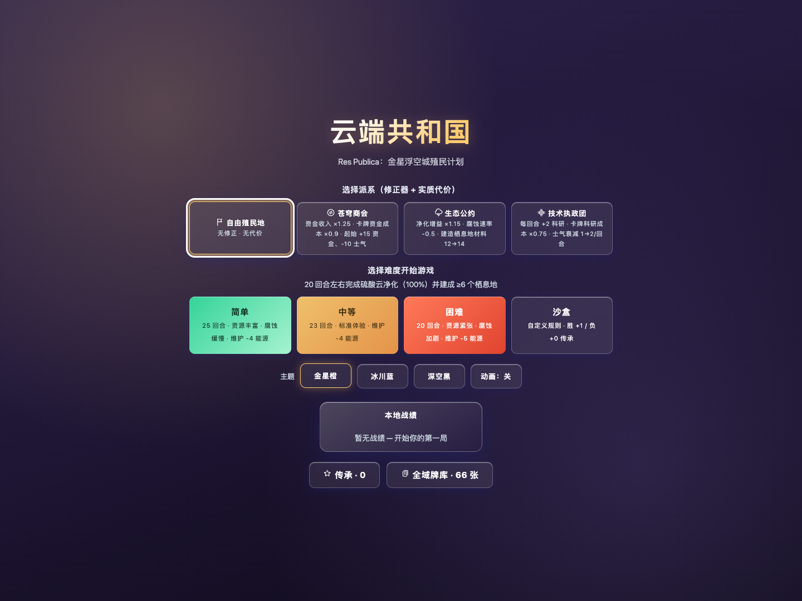

你的牌库，你的路线
自定义牌库与阵营决定开局，再用科技树和局外传承拓展下一局的选择。
金星云层之上，一座浮空城市。
下一张牌，会把你带向哪里？
在有限回合内净化硫酸云、保护平台并建设至少 6 个栖息地。每一份资源、每一次选择，都在改变这座城市的命运。
自定义牌库与阵营决定开局，再用科技树和局外传承拓展下一局的选择。
每回合揭示环境事件，最多打出 3 张牌；修理、建设与资源分配，需要一起考虑。
支持直接打开页面离线运行、版本化本地存档与刷新后继续；还可用确定性重放检查一局的走向。
简单、中等、困难三档难度，另有沙盒；中英双语和三套主题，让同一局适应你的习惯。

用简单模式熟悉规则，再尝试更紧张的回合限制，或在沙盒中探索。
每回合最多打 3 张牌，同时考虑修理平台、建造栖息地与资源收支。
在最终回合前达成目标，也要守住平台完整度；归零就会坠毁。